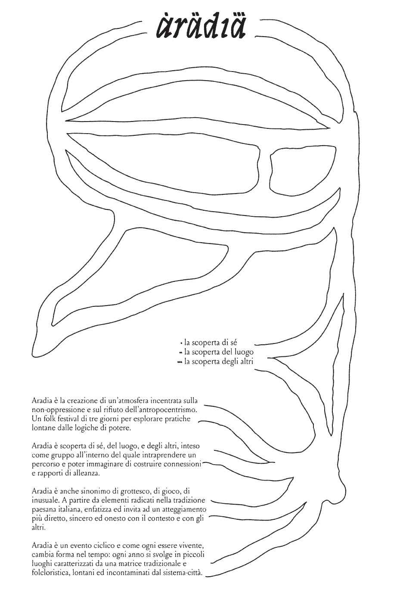
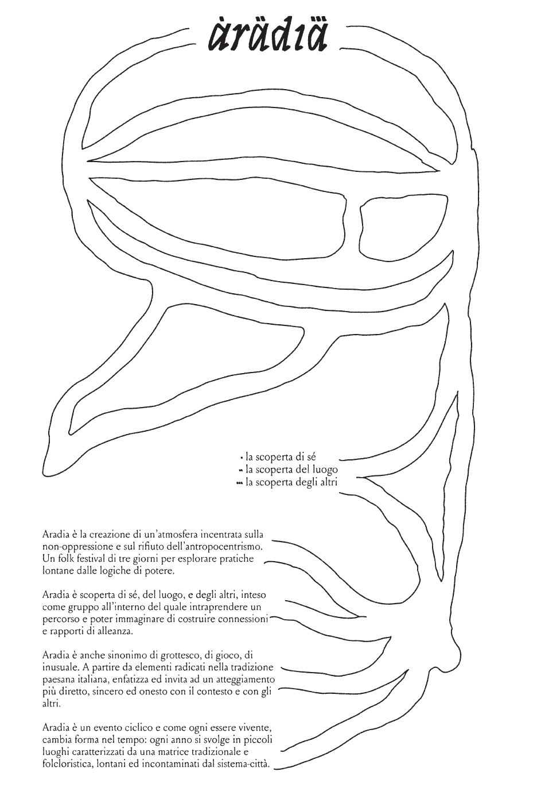

Program
11.08.2023
10 am: place exploration activity with Marco Solari
12 am: collective meditative activity
2 pm: Talk: agropastoral culture with Ferdinando Mirizzi
3 pm: manure horn: fertilizing the soil through biodynamics
6 pm: self-production workshop with local wood (part I) with Camposaz
9 pm: workshop of collective music made from local objects
12.08.2023

9 am: raw earth workshop: ancient building material with Matierra
2 pm: occupying space: being there is a (a)political act
4 pm: self-production workshop with local wood (part II) with Camposaz
6 pm: exhibition of territorial publishing projects
7 pm: Sali e Tabacchi + Hidden Umbria with Tobia Faverio
11 pm: exploring the psychophysical effects of sound: electronic music dj set
with Caterina Barbieri e Suzanne Ciani
13.08.2023

9 am: Dharma Yoga and improvisational dance with Lavinia Cometti
10 am: fruit picking: collective harvest of fruits, vegetables and herbs
12 am: collective preparation of vegetable dishes
3 pm: Talk: leaving a mark: carving stone as primordial writing with Guerrilla Spam
6 pm: showcase of workshop results
10 pm: bonfire and celebration to Aradia
About
Aradia
 

Aradia Folk Festival is a three-day event named after the mythological figure referred to as the first witch in history, who was sent to earth by the goddess Diana to teach the benefits of magic to the poor and peasants, enabling them to emancipate themselves and oppose abuses of power. The festival was born out of the concept of non-oppression and the experimentation with different practices that can hint at a paradigm shift. It is interested in traditional practices and folkloric traits: it emphasizes the belief that from these often bizarre and primal elements, a more honest attitude can be found.
Embracing interconnectedness, Aradia is divided into three complementary thematic areas:
. self-discovery
.. the discovery of the place
... the discovery of others
The interweaving of the different activities is aimed at creating an atmosphere capable of stimulating sensitivity, thinking about the present and the future in a new way, starting from the roots; a cultural innovation that stems from respect for the other, for the environment, and attempts to indicate a track for an attitude that can overturn current values.
Each edition is hosted in a place that changes from year to year, bringing with it a recurring element, that is, a motif connected with the place and its tradition.
The festival wants to move, to change, to give space to different hidden realities, trying to create as much as possible a varied view of the whole, so that even in the choice of location participation is horizontal.